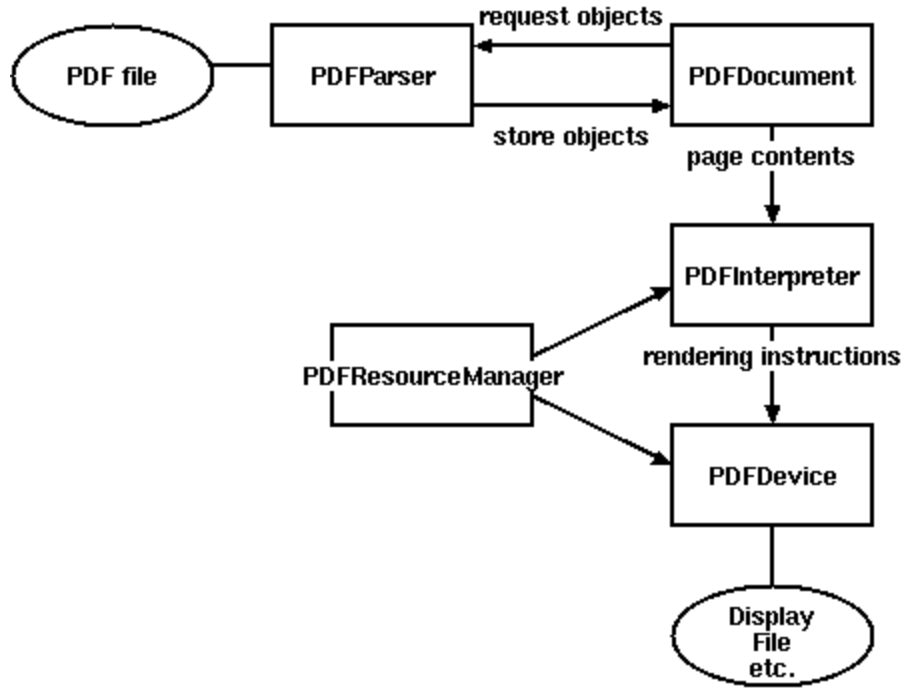
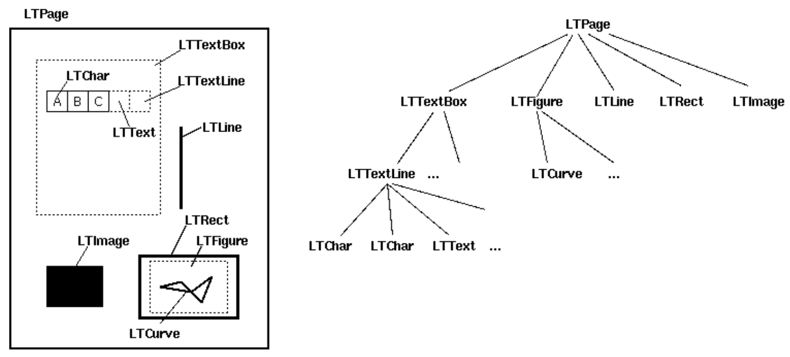
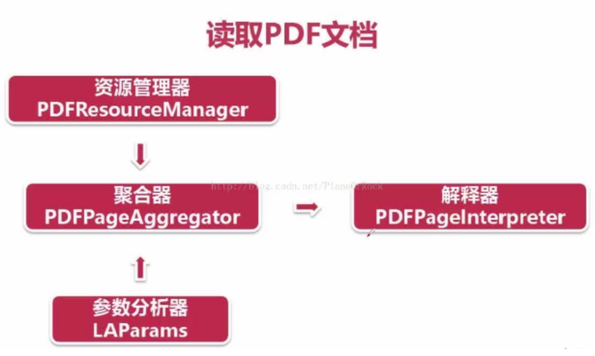
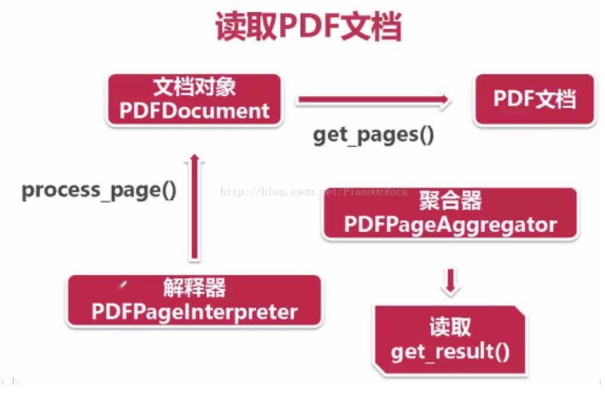

Tec5-pdfminer
1. pdfminer的安装
使用pip安装pdfminer:
pip install pdfminer3k
2. pdf与pdfminer
- 解析PDF是一件非常消耗时间和内存的工作，因此PDFMiner使用一种称作lazy parsing的策略，只有在需要解析的使用才去解析。
- 解析PDF需要的类
- PDFParser：从文件中获取数据
- PDFDocument：存储文档数据结构到内存中
- PDFPageInterpreter：解析page内容
- PDFDevice：把解析到的内容转化为你需要的东西
- PDFResourceManager：保存共享内容例如字体或者图片。

- 比较重要的是Layout，主要包括以下组件:LTPage,代表整个页面。可能包含子对象，例如LTTextBox，LTFigure，LTImage，LTRect，LTCurve和LTLine。

3. 完整代码实现
# -*- coding: utf-8 -*-
import os
from pdfminer.pdfparser import PDFParser, PDFDocument
from pdfminer.pdfinterp import PDFResourceManager, PDFPageInterpreter
from pdfminer.converter import PDFPageAggregator
from pdfminer.layout import LTTextBoxHorizontal, LAParams
from pdfminer.pdfinterp import PDFTextExtractionNotAllowed
from tqdm import tqdm
class extractFromPDF:
def __init__(self, pdf_name, pdf_root, save_root):
'''
初始化转换PDF的类
:param pdf_name:PDF的文件名
:param pdf_root:PDF存放的根目录
:param save_root:TXT保存的根目录
'''
self.pdf_name = os.path.join(pdf_root, pdf_name)
self.save_path = os.path.join(save_root, pdf_name.split(".")[0] + ".txt")
self.source = []
def _fresh(self):
'''
将得到的结果刷新到TXT中去
:return:
'''
with open(self.save_path, 'w', encoding="utf-8") as f:
for line in self.source:
f.write(line.strip() + "\n")
def run(self):
'''
执行对PDF的处理
:return:
'''
with open(self.pdf_name, 'rb') as pdf:
self.pdf = pdf
self._parse_pdfminer()
self._fresh()
def _parse_pdfminer(self):
'''
解释处理PDF,并将每一行放置到source中去
:return:
'''
# 用文件指针创建一个PDF文档分析器
parser = PDFParser(self.pdf)
# 创建PDF文档
doc = PDFDocument()
# 分析器和文档相连接
parser.set_document(doc)
doc.set_parser(parser)
# 初始化PDF文档分析器(没有密码)
doc.initialize()
# 检查文档是否可以提取
if not doc.is_extractable:
raise PDFTextExtractionNotAllowed
else:
# 创建PDF资源管理器，来管理共享资源
pdf_resource_manager = PDFResourceManager()
# 创建一个PDF设备对象
pdf_la_params = LAParams()
# 将资源管理器和设备对象聚合
device = PDFPageAggregator(pdf_resource_manager, laparams = pdf_la_params)
# 创建一个PDF解释器对象
interpreter = PDFPageInterpreter(pdf_resource_manager, device)
# 按照页进行遍历
for page in doc.get_pages():
# 使用页面解释器来读取
interpreter.process_page(page)
# 接收该页面的LTPage对象，包含有解析出来的各种对象
layout = device.get_result()
for x in layout:
if (isinstance(x, LTTextBoxHorizontal)):
result = x.get_text()
self.source.append(result + "\n")
pdf_root = "./ACL2020"
save_root = "./ACL2020_txt"
if __name__ == '__main__':
if(not os.path.exists(save_root)):
os.mkdir(save_root)
ACL_lines = os.listdir(pdf_root)
fail_lines = []
for ACL_line in tqdm(ACL_lines):
try:
tmp = extractFromPDF(ACL_line, pdf_root, save_root)
tmp.run()
except Exception as e:
fail_lines.append(ACL_line)
print(ACL_line, "失败")
print(str(e))
以下是代码分析
3.1. 打开本地或者网络PDF
# 打开本地PDF文本
with open(self.pdf_name, 'rb') as pdf:
self.pdf = pdf
# 解析网络上的PDF
url = "https://"
pdf_html = urllib2.urlopen(url).read()
3.2. 建立文档分析器并关联文档
# 用文件指针创建一个PDF文档分析器
parser = PDFParser(self.pdf)
# 创建PDF文档
doc = PDFDocument()
# 分析器和文档相连接
parser.set_document(doc)
doc.set_parser(parser)
3.3. 文档密码初始化
# 初始化PDF文档分析器(没有密码)
doc.initialize()
3.4. 创建解析器

# 创建PDF资源管理器，来管理共享资源
pdf_resource_manager = PDFResourceManager()
# 创建一个PDF设备对象
pdf_la_params = LAParams()
3.5. 创建聚合器和解释器
# 将资源管理器和设备对象聚合
device = PDFPageAggregator(pdf_resource_manager, laparams = pdf_la_params)
# 创建一个PDF解释器对象
interpreter = PDFPageInterpreter(pdf_resource_manager, device)
- 聚合器，接收资源管理器和参数
- 解释器，接收资源管理器和聚合器
3.6. 文本获取

# 按照页进行遍历
for page in doc.get_pages():
# 使用页面解释器来读取
interpreter.process_page(page)
# 接收该页面的LTPage对象，包含有解析出来的各种对象
layout = device.get_result()
for x in layout:
if (isinstance(x, LTTextBoxHorizontal)):
result = x.get_text()
self.source.append(result + "\n")
3.7. 结果分析
if not doc.is_extractable:
raise PDFTextExtractionNotAllowed
- 如果涉及到的是图片中的文字可以结合OCR完成。